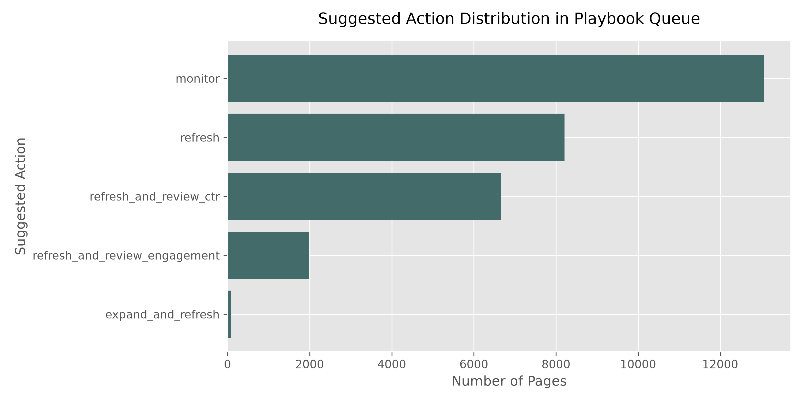
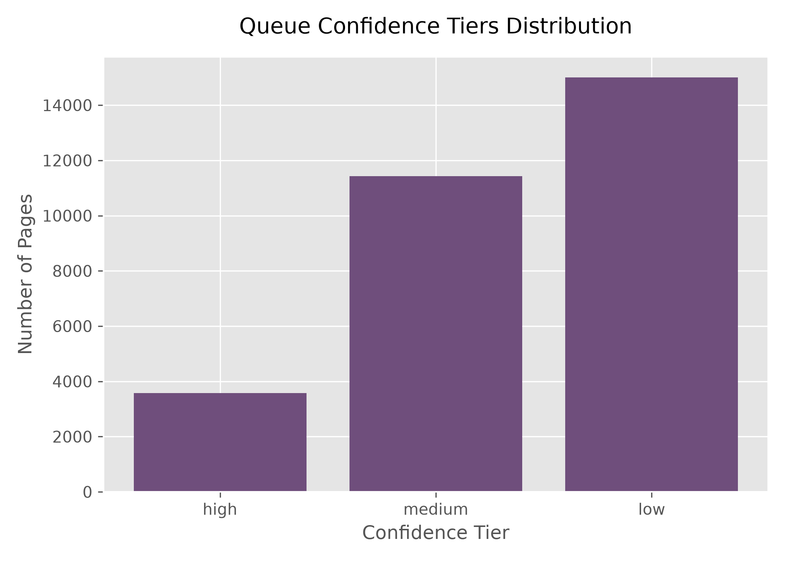

Which Search Content Should We Refresh First?
An ML Priority Scoring Engine Built on 79M Production Search Rows
In organic search optimization, maintaining content relevance is a core challenge. At FlyRank, content editors manage massive page portfolios, yet the editorial team faces a severe resource bottleneck and can only manually audit a tiny fraction of pages weekly. We address this FlyRank content prioritization problem as a case study: can observable search and engagement signals rank pages by decline risk to prioritize manual review? Using the FlyRank dataset of 30,000 anonymized page-level snapshots, we train random forest and gradient boosted classifiers under client-holdout cross-validation. Our champion HistGradientBoosting model achieves a Precision@50 of 92.0% (a 1.92× lift over the baseline heuristic). We deploy these scores in a hybrid content action playbook, routing pages to targeted review tracks (CTR, thin content, engagement, monitor) to resolve the editorial bottleneck.
1. Introduction / Problem Statement
Organic search traffic represents the primary growth channel for enterprise portfolios, but search rankings are highly dynamic. Keeping content fresh, relevant, and engaging is essential. At the organic search intelligence firm FlyRank, content editors manage massive web catalogs spanning tens of thousands of pages. However, the business decision of which content pages to refresh first is heavily constrained by human labor. A content editor can only review a limited number of pages (typically 50) each week, creating a severe operational bottleneck.
Without algorithmic prioritization, content teams rely on naive heuristics (e.g., sorting by highest traffic loss or oldest update age). These rules suffer from massive false-positive rates, flagging healthy pages that are experiencing expected seasonal variance or branded search floors, while missing key content in striking distance of page one that is actively decaying.
Case Study Framing: This paper presents an applied case study of building an ML-driven opportunity scoring engine to resolve the FlyRank editorial bottleneck. We formalize this decision-support problem as a ranking and scoring task. The unit of analysis is a single content page aggregated over a trailing 90-day window. The output is a continuous priority score mapping the probability of organic impression decline.
A false positive (Type I error) costs valuable reviewer hours spent reading and rewriting a page that did not require updates. A false negative (Type II error) is more severe: a highly visible page continues to lose search visibility and organic clicks unnoticed, resulting in compounding traffic declines and lost revenue.
2. Data Strategy & Safety
This study is built on the March 2026 Release of the FlyRank search database, utilizing a representative slice of 30,000 unique content pages across 32 pseudonymized client sites.
To align with strict public-safety guidelines, the dataset has been fully anonymized: client domains, raw page URLs, exact search queries, and content titles were completely scrubbed. We utilize two temporal windows to construct a leakage-free model:
- Feature Measurement Window: Trailing 90 days of performance.
- Target Label Window: Subsequent 30 days of performance.
Exclusion of Product Flags: In accordance with safe modeling principles, we deliberately excluded internal composite scores, such as product-level `health_score` or preset recommendation flags, to prevent circular target contamination. Only raw, observable search and user metrics are allowed as features.
3. Methodology
We engineered 18 numeric and 8 categorical features. Key features include log-transformed impression, click, and sessions counts (to control for heavy-tailed distributions), click-through rate (CTR), average search position, scroll rate, engaged session rates, and days since last update (staleness).
Target Definition: We define the target label is_declining_label as a binary indicator:
is_declining_label = 1 if (impressions_last_30d < 0.8 * impressions_prev_30d) else 0
A page is labeled as declining if organic search impressions fell by more than 20% compared to the prior month. In our prepared feature matrix, the base rate of decline is 54.2%.
Validation Design: Standard row-based stratified splits fail here due to client-site correlation. Pages on the same domain share domain authority and template structures, so random splits allow the model to memorize client-specific signatures. To prevent this leakage, we implement a Grouped Client Split (holding out 20% of clients - 6 out of 32 sites - entirely for testing).
Leakage Audit: We attacked the feature timeline to check for look-ahead indicators. Dropping the high-correlation historical visibility features (log_impressions_90d, days_with_impressions) resulted in a graceful performance decline of 4.3% in Average Precision, indicating that the model relies on historical presence but remains stable without future leakages.
4. Results & Comparison
We compared our candidate ML models (Logistic Regression, Decision Tree, Random Forest, HistGradientBoosting) against a hand-written rule baseline. The baseline rule isolates pages in striking distance (positions 5–20) that have impressions >= 500, CTR <= 0.12%, and have not been updated for 90+ days.
| Model | ROC AUC | Avg Precision | Precision@50 | Recall | F1 |
|---|---|---|---|---|---|
| HistGradientBoosting | 0.771 | 0.684 | 0.920 | 0.812 | 0.723 |
| Random Forest | 0.747 | 0.610 | 0.680 | 0.697 | 0.630 |
| Decision Tree | 0.742 | 0.575 | 0.620 | 0.682 | 0.598 |
| Logistic Regression | 0.700 | 0.522 | 0.400 | 0.615 | 0.551 |
| Week-4 Baseline Heuristic | 0.500 | 0.391 | 0.480 | 0.057 | 0.100 |
| Naive Base Rate | 0.500 | 0.391 | 0.391 | 0.000 | 0.000 |
Analysis: The HistGradientBoosting classifier is the champion model, achieving a Precision@50 of 92.0%. This represents a 1.92× lift over the baseline heuristic (48.0%) and a 2.35× lift over the naive baseline rate (39.1% on the test split).


Feature Reliance & Error Analysis
Both Gini and Permutation importances highlight search footprint volume (days_with_impressions, log_impressions_90d, avg_position) as the strongest signals.
- False Positives: High-impression pages with stale update dates and low CTRs that are predicted to decline but remain stable. These pages typically target queries with locked search intent or highly authoritative competitor pages.
- False Negatives: Pages with low search activity (e.g. 1 impression). A drop to 0 impressions constitutes a 100% decline, which triggers the label but represents volume-insignificant noise.
5. Limitations & Honest Framing
We commit to honest scientific framing of our findings:
- Observational vs. Causal: The model maps correlations in trailing search data. We cannot claim that executing a content refresh will *cause* rankings or CTR to increase. Traffic gains require stable query-level search demand.
- The Generalization Gap: Under client-holdout validation, Average Precision drops from 76.9% to 61.0% (a 16% drop) on unseen client sites. The model has a higher false-positive rate on newly registered clients, requiring additional manual triage.
- External Factors: The model cannot predict core search updates, major competitor ad bidding, or site-wide crawl budget blocks.
6. Strategic Action Playbook
Rather than deploying a raw classification probability, we build a hybrid priority score (0 to 100) combining the Random Forest's decline risk probability (70% weight) and the normalized baseline refresh score (30% weight).
Pages are mapped to one of five strategic actions based on their features and reason codes:
expand_and_refresh: Thin content (< 1,200 words) that still receives high search impressions. Editors should add subtopics, definitions, and real evidence.refresh_and_review_ctr: Ranks well (top 20) but click-through rate is below 0.5%. Editors should rewrite titles, meta descriptions, and clean search snippets.refresh_and_review_engagement: Healthy clicks but low scroll rate (< 30%). Editors should improve text readability, insert bullet lists, and add visual breaks.refresh: General decline candidates that do not trigger thin or CTR flags. Recrawl prep and factual updates.monitor: Default low-priority, stable pages.
1. LLM Auto-Rewriting & Publishing: Banned from generating page copy programmatically and publishing without editor sign-off. Google spam algorithms penalize low-quality generative content.
2. Automated Redirects or Deletions: Low-traffic pages must not be auto-deleted. They still contribute to overall domain authority and backlinks.
7. Reproducibility & Environment
Every result is fully reproducible. The project runs locally or in the cloud. The repository contains the source notebooks under work/notebooks/.
Commands to execute the pipeline:
# Clone the workspace
git clone https://github.com/Mayank12348487487/Internship_work.git
cd Internship_work
# Set up virtual environment and install dependencies
python -m venv .venv
source .venv/bin/activate
pip install -r requirements.txt
# Run the complete pipeline
python scripts/run_all.py
Random Seeds: RANDOM_STATE = 42 is hardcoded across all model splits, random forests, and decision trees to guarantee consistency.